Лечение в Корее — это не только медицина. Пусан предлагает уникальное сочетание современной медицины, мягкого морского климата и богатой культуры. Мы поможем сделать вашу поездку комфортной и насыщенной.
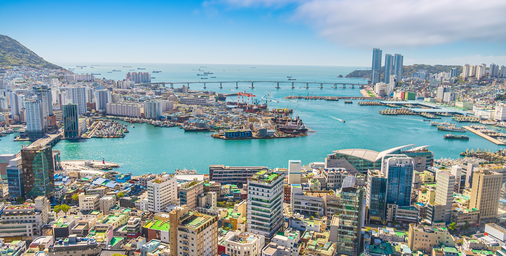
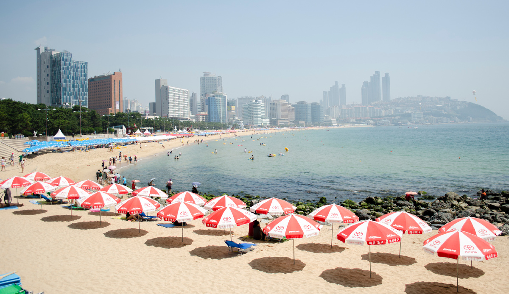
Мягкий и благоприятный для восстановления климат. Океан рядом с городом создаёт уникальную атмосферу. Пусан окружён живописными пляжами с чистейшей водой, где можно отдохнуть после медицинских процедур.
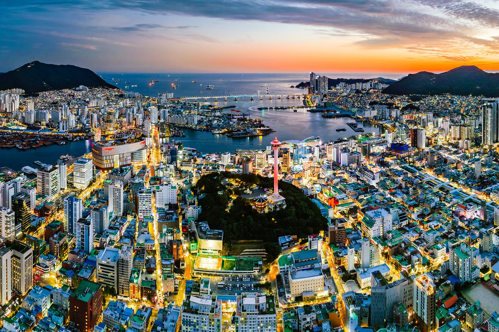
Второй по величине город Кореи, но без суеты Сеула. Комфортный темп жизни, идеален для совмещения лечения и отдыха. Пусан предлагает спокойную атмосферу при этом сохраняя все преимущества крупного современного города.
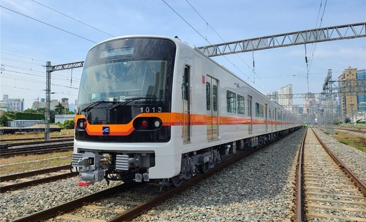
Метро, такси, больницы и гостиницы в шаговой доступности. Развитая транспортная сеть делает передвижение по городу простым и удобным. Все медицинские центры легко доступны на общественном транспорте.
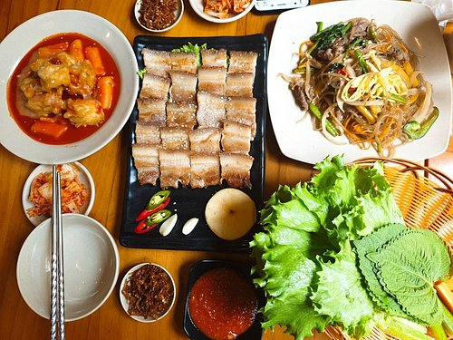
Свежие морепродукты, уличная еда и рестораны на любой вкус. Пусан славится своими рыбными рынками и уникальными блюдами. Гастрономическое разнообразие порадует даже самых требовательных гурманов.
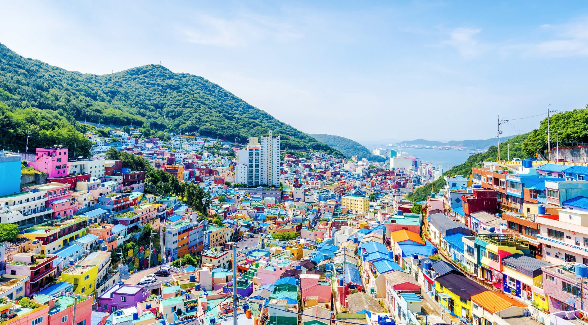
Южная Корея входит в число наиболее безопасных стран мира. Низкий уровень преступности, высокая культура общества. Вы можете чувствовать себя в безопасности в любое время суток.
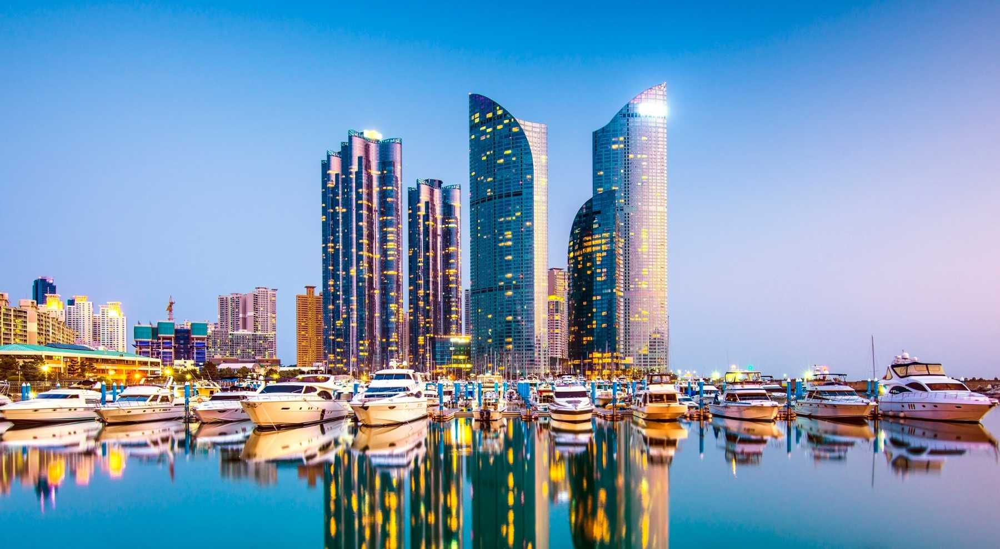
Наши координаторы всегда на связи и помогут решить любой вопрос. Полное сопровождение на русском языке. Мы берём на себя все организационные моменты, чтобы вы могли сосредоточиться на лечении и отдыхе.
Встретим в аэропорту Гимхэ, организуем комфортный трансфер до гостиницы или клиники
Подберём гостиницу или апартаменты с учётом бюджета и близости к клинике
Пляж Хэундэ, рыбный рынок Ягси, храм Хэдон Ёнгунса, горный парк Кымджонсан — покажем лучшее
Организуем однодневную поездку в столицу на скоростном поезде KTX (40 минут)
Рынки Гукче и Нампо, торговые центры, корейская косметика и медицинские товары
Гастрономическое знакомство с Пусаном — морепродукты, традиционная кухня, уличная еда
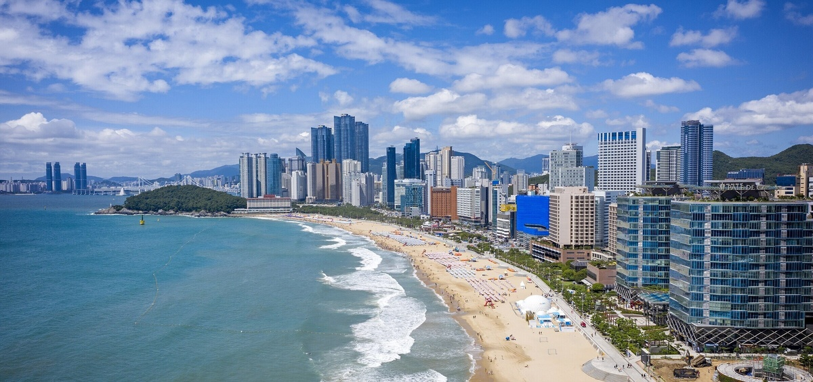
Один из самых известных пляжей Кореи. Тёплое море, набережная и развитая инфраструктура. Пляж протянулся на 1,5 км и оборудован всем необходимым для комфортного отдыха: душевые, кабинки для переодевания, рестораны и кафе.
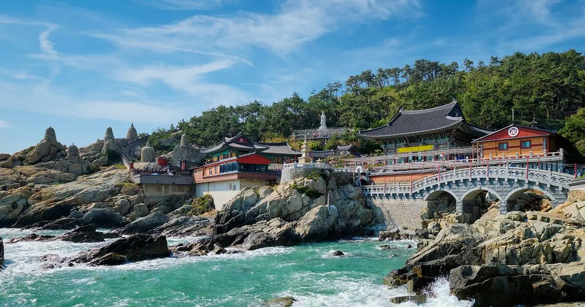
Уникальный буддийский храм прямо на скалах у моря — одно из самых живописных мест Кореи. Построен в 1376 году и является единственным храмом в Корее, расположенным на берегу океана. Особенно красив на рассвете.
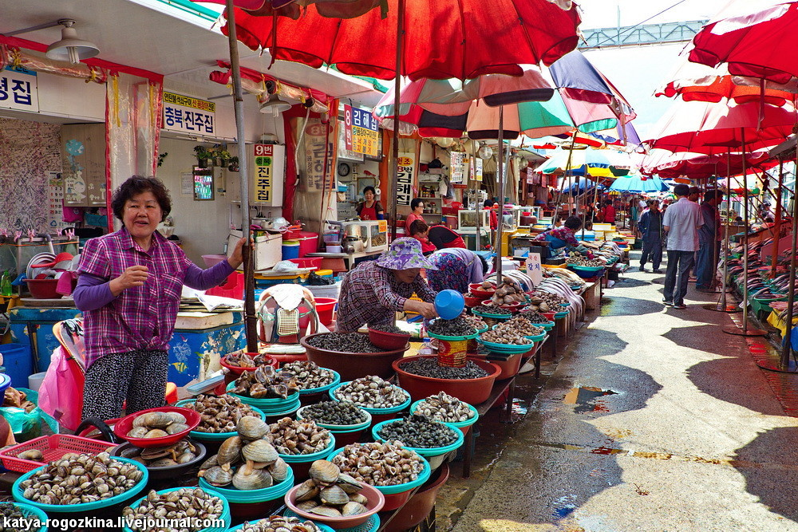
Крупнейший рыбный рынок Кореи — живые морепродукты, традиционная атмосфера и свежайшая кухня. Работает с 1920-х годов. На первом этаже продают свежие морепродукты, на втором — готовят в многочисленных ресторанах.
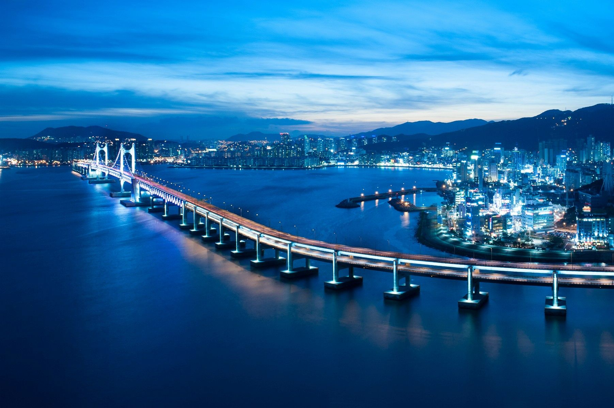
Разводной мост с подсветкой — символ современного Пусана. Ночью особенно красив. Самый длинный морской мост в Корее (7,4 км). Вечером включается яркая LED-подсветка, создающая незабываемое зрелище.
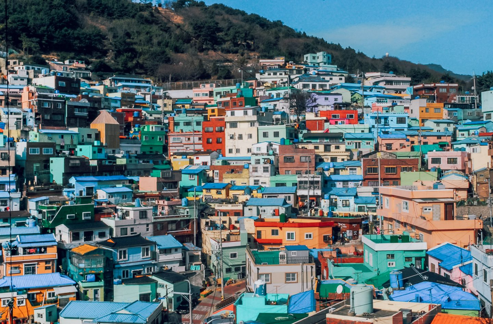
«Корейский Санторини» — живописный арт-квартал с разноцветными домиками на склоне горы. Бывшая трущоба превратилась в культурный центр с галереями, мастерскими и уличным искусством. Идеальное место для фотографий.
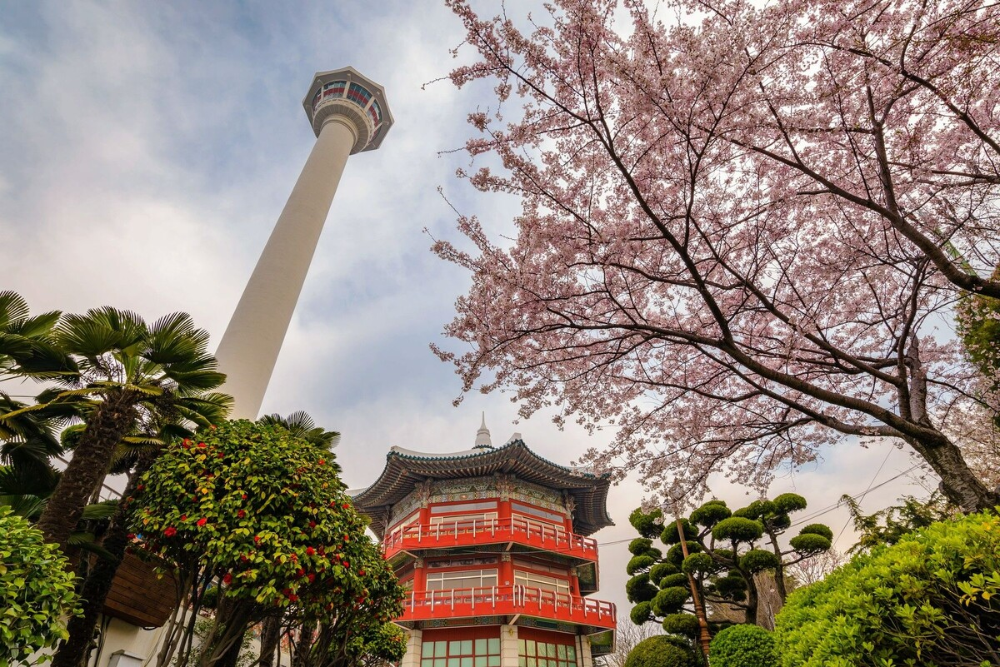
Горный природный парк с древней крепостью — идеально для прогулок и восстановления. Крепостная стена Кымджонсансон была построена в 1593 году. С вершины открывается панорамный вид на Пусан и окрестности.
Гражданам России для въезда требуется виза. Мы помогаем с оформлением медицинской визы и сопровождающим документам.
Южнокорейская вона (KRW). Обмен в банках и обменных пунктах. Карты принимаются повсеместно.
Мягкий морской климат. Лучшее время для визита — весна (март–май) и осень (сентябрь–ноябрь).
Корея — страна с лучшим в мире интернетом. Помогаем с оформлением местной SIM-карты.
Расскажите о своих целях — лечение, отдых или всё вместе. Мы составим оптимальный маршрут и возьмём на себя организацию.
Оставить заявку